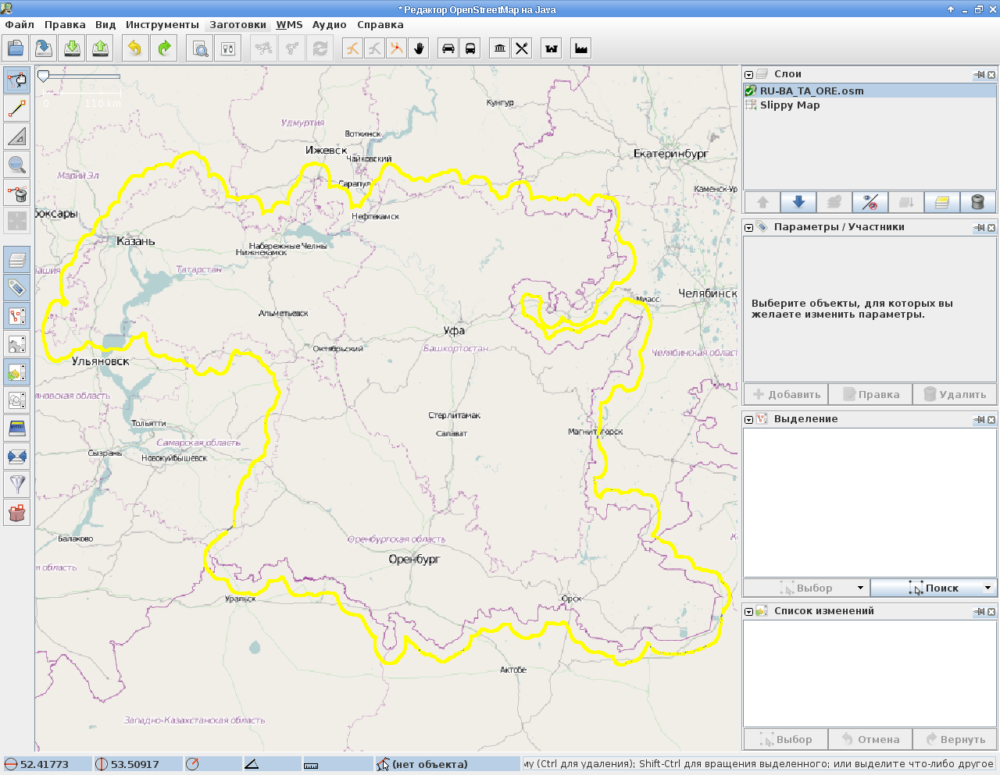

Это - первая заметка, посвящённая настройке и использованию генератора тайлов Mapnik. Генератор тайлов - это программа, создающая квадратные растровые изображения фрагментов карты, по её векторному описанию. Прежде чем настраивать сам генератор тайлов, нужно подготовить для него данные, чем мы и займёмся в этой заметке.
Заливка карт в базу данных Mapnik на первый взгляд не должна представлять каких-то сложностей - достаточно взять карту в формате с расширением osm, вооружиться утилитой osm2pgsql и вперёд. Но на самом деле даже в этом, на первый взгляд простом, деле, не имея никакого опыта, можно довольно долго ходить по плотно разложенным граблям.
Мне нужно было скачать и залить в базу данных Mapnik карты Башкирии, Татарстана и Оренбургской области. Я нашёл их на сайте gis-lab.ru, по ссылке http://gis-lab.info/projects/osm_dump/. Попробовал залить их в базу данных и был несколько разочарован - карты, выложенные там, устарели.
Дело в том, что сайт OpenStreetMap с 1 апреля 2012 года приостановил публикацию файлов карты планеты из-за смены лицензии: http://gis-lab.info/blog/2012-03/osm-license-change/. Была уже середина июня, а данные на сайте gis-lab.ru по-прежнему толком не обновлялись. И я решил вырезать из последнего дампа планеты интересующие меня области самостоятельно.
Для различных операций по обработке карт osm нам понадобится утилита osmosis. Лучше всего установить osmosis версии не ниже 0.40. Я поставил эту утилиту из репозитория Debian Wheezy (7.0), который на момент написания заметки был тестовой веткой Debian.
На скачивание архива размером 23 гигабайта со страницы http://planet.openstreetmap.org/ у меня ушло примерно 6 часов. Ещё 12 часов ушло на разжатие архива, а разжатый файл занял примерно 330 гигабайт.
В интернете я наткнулся на заметку *.osm or *.pbf ?, в которой сравнивались размеры файлов в этих форматах. Чтобы освободить место на диске и ускорить обработку данных, я решил преобразовать файл планеты в двоичный формат:
$ osmosis --read-xml file="planet-latest.osm" --write-pbf file="planet-latest.pbf" omitmetadata="yes"
Преобразование заняло примерно 25 часов, а двоичный файл занял всего-лишь 14 гигабайт.
Я очень советую проделать эту операцию, особенно если вы собираетесь работать с этим файлом в дальнейшем - накладывать файлы обновлений, вырезать из него различные области и т.п. Разница в нагрузке на диск по чтению уменьшается существенно и заметно даже на глаз. Ну и свободное место на диске лишним не бывает ;-)
Теперь нам понадобятся файлы полигонов для обрезки интересующих нас областей. Я взял интересующие меня файлы с сайта gis-lab.ru, всё на той же странице http://gis-lab.info/projects/osm_dump/ по ссылке http://data.gis-lab.info/osm_dump/poly/.
Ещё нам понадобятся утилиты для преобразования файлов полигонов в файлы osm и обратно, которые можно взять здесь: http://svn.openstreetmap.org/applications/utils/osm-extract/polygons/ и редактор JOSM, который можно установить из дистрибутива.
Скачаем и подготовим к использованию скрипты:
$ wget http://svn.openstreetmap.org/applications/utils/osm-extract/polygons/poly2osm.pl $ wget http://svn.openstreetmap.org/applications/utils/osm-extract/polygons/osm2poly.pl $ chown +x poly2osm.pl osm2poly.pl
Установим редактор JOSM и его плагины:
# apt-get install josm josm-plugins
Программа постоянно обновляется, а свежую версию JOSM можно скачать с сайта josm.ru. Я рекомендую скачивать последнюю протестированную версию. Запустить её можно так:
$ java -jar josm-tested.jar
Преобразуем файлы полигонов в формат osm:
$ ./poly2osm.pl RU-BA.poly > RU-BA.osm $ ./poly2osm.pl RU-TA.osm > RU-TA.osm $ ./poly2osm.pl RU-ORE.osm > RU-ORE.osm
Теперь запустим редактор JOSM, и откроем в нём все три получившихся файла в отдельных слоях. Объединим слои, а затем воспользуемся инструментом "Объединить накладывающиеся полигоны". Выделим два любых полигона и нажмём Shift-J. Повторим операцию для всех оставшихся полигонов. В итоге получим один полигон, который сохраним в файл с расширением osm. Я сохранил под имененм RU-BA_TA_ORE.osm.
Осталось преобразовать файл из формата osm в формат полигона:
$ ./osm2poly.pl RU-BA_TA_ORE.osm > RU-BA_TA_ORE.poly
Теперь нужно обрезать карту планеты по полигону. Как выяснилось, в процессе обрезки карты планеты по полигону, osmosis создаёт временные файлы в каталоге /tmp. У меня этот каталог находится на корневом разделе, на котором было свободно всего 6 гигабайт. Программа работала довольно долго, а обнаружил я её уже завершившейся с сообщением о нехватке места без какой бы то ни было конкретики. При втором запуске я стал следить за местом на дисках, надеясь что программе не хватило именно его, а не места в оперативной памяти. Спустя несколько часов я увидел, что программа начала занимать место на корневом диске и нашёл её временные файлы в каталоге /tmp. Я поискал ответа в интернете и нашёл совет воспользоваться переменной окружения JAVACMD_OPTIONS. Как я узнал потом, временные файлы занимали примерно 24 гигабайта.
Кроме того, на карте могут существовать объекты, частично выходящие за границы полигона. Для того, чтобы эти объекты целиком попали в результирующую карту, нужно указать опции completeWays=true - дороги полностью и completeRelations=true - все объекты, относящиеся к вырезаемым (смысл этой опции мне не совсем понятен).
Для ускорения процесса вырезки карты рекомендуют воспользоваться опцией idTrackerType=BitSet, которая позволяет эффективно отслеживать идентификаторы объектов при вырезании из карты больших фрагментов. По умолчанию используется idTrackerType=idList, которая обладает какими-то ошибками в реализации, приводящими к высоким затратам времени на обрезку карты. Важно, что эту опцию необходимо указывать для каждой опции-фильтра (взята эта рекомендация отсюда: http://fprog.livejournal.com/5508.html?thread=166276). На моём компьютере osmosis при использовании этой опции завершался с ошибкой нехватки оперативной памяти, поэтому я не смог оценить прирост скорости обрезки карты.
Итоговая команда для обрезки карты у меня получилась такой:
$ env JAVACMD_OPTIONS="-Djava.io.tmpdir=/home/stupin/Downloads" \ osmosis --read-pbf file=planet-latest.pbf \ --bounding-polygon file=RU-BA_TA_ORE.poly completeWays=true \ --write-pbf file=RU-BA_TA_ORE.pbf omitmetadata=true